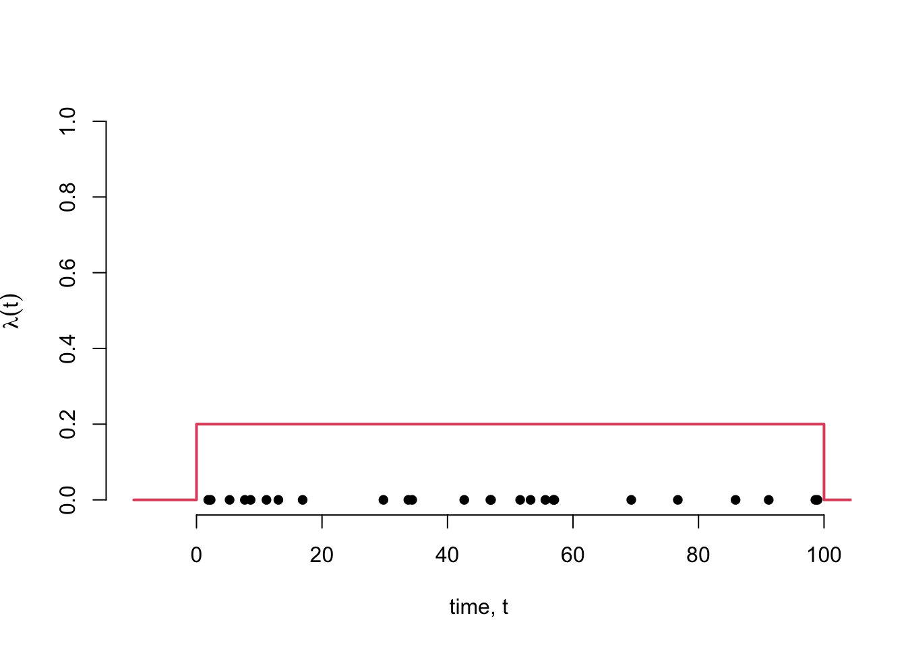

simulate_hpp_by_intervals <- function(t_min, t_max, lambda){
event_times <- c()
t_next <- t_min + rexp(n = 1, rate = lambda)
while(t_next <= t_max){
event_times <- c(event_times, t_next)
t_next <- t_next + rexp(n = 1, rate = lambda)
}
return(event_times)
}Workshop 2: Simulation
Overview
In the first workshop we met the formal definition of the Poisson process and considered some of the properties that follow from this definition.
In this workshop we will see how those properties can be used to simulate realisations of the point process. We will write our own R functions to generate point patterns from a given Poisson process.
Content
- The intensity specification allows us to simulate on arbitary spaces
- The interval specification allows us to simulate on \(\mathbb{R}\)
- The counting specification is not so helpful for simulation purposes.
Simulating Homogeneous Poisson Processes
Simulate a homogeneous Poisson process with intensity function \(\lambda(t) = 0.2\) on the interval \(t \in (0,100)\).
Using the interval specification
Outline
Recall that we can interpret the intensity function as the local abundance of events per unit time.
For a homogeneous process this event rate is the same at all times, and so inter-event times are independent and identically distributed with an Exponential(2/5) distribution.
This allows us to simulate the times between events - but what about the time until the first event?
Here we can exploit the memoryless property of the exponential distribution, to see that this will have the same distribution.
Exercise: Show that a continuous random variable has the memoryless property, \(\Pr(Y > y + a | Y > y) = \Pr(Y > a)\) for all \(y, a > 0\), if and only if it is an exponential random variable.
Approach
Simulation Approach: Discrete Event Simulation
- Start at \(t = t_{min}\) and create an empty event set.
- Simulate time until next event
- If time of next event \(< t_{max}\), then append the time of the next event to the event set and return to (2)
- Else, end.
Implementation
Example
lambda_val <- 0.2
hpp_1 <- simulate_hpp_by_intervals(t_min = 0, t_max = 100, lambda = lambda_val)
plot(
x = hpp_1,
y = rep(0, length(hpp_1)),
pch = 16,
xlim = c(-10,100),
ylim = c(0,1),
xlab = "time, t",
ylab = expression(lambda (t)),
bty = "n"
)
lines(
x=c(-10,0,0,100,100,110),
y = c(0,0,lambda_val,lambda_val,0,0),
col = 2,
lwd = 2
)
Using the intensity specification
Outline
Under the intensity specification we know that \(N(A) \sim \text{Pois}(\Lambda(A))\), where
\[ \Lambda(A) = \int_A \lambda(t) \mathrm{d}t.\]
That is, the area underneath the intensity function determines the expected number of events that we will see in that region. For a homogeneous intensity function and a region \(A\) consisting of a single interval this integral is particularly simple: \(\Lambda((t_1, t_2)) = \lambda(t_2 - t_1)\).
Given the number of events, we can then simulate their locations. Events in a Poisson process are located randomly across the interval, independently of one another. In the case of a homogeneous Poisson process events are equally likely to occur at any time and so are located uniformly at random over the space. This gives us our second simulation method.
Approach: Conditional Simulation
- Calculate the integrated intensity \(\Lambda\) on the region of interest \(A\)
- Simulate the number of events in the region
- Conditional of the number of events, locate each event on \(A\) independently, by sampling locations independently from the probability density function
\[ f_X(x) = \frac{\lambda(x)}{\Lambda(A)}\mathbb{I}(x \in A).\]
Note that for a homogeneous process, this simplifies to selecting locations independently and uniformly at random over \(A\).
Implementation
simulate_hpp_by_intensity <- function(t_min, t_max, lambda){
n_events <- rpois(n = 1, lambda = lambda*(t_max - t_min))
event_times <- runif(n = n_events, min = t_min, max = t_max)
return(event_times)
}Example
lambda_val <- 0.2
hpp_2 <- simulate_hpp_by_intensity(t_min = 0, t_max = 100, lambda = lambda_val)
plot(
x = hpp_2,
y = rep(0, length(hpp_2)),
pch = 16,
xlim = c(-10,100),
ylim = c(0,1),
xlab = "time, t",
ylab = expression(lambda (t)),
bty = "n"
)
lines(
x=c(-10,0,0,100,100,110),
y = c(0,0,lambda_val,lambda_val,0,0),
col = 2,
lwd = 2
)
Question: What computational benefit does the simulation based method have over the interval based method? When will this become more important?
Question: What benefit does the interval specification have over the interval specification?
Interlude: Superposition and Random Thinning
Superposition of point processes
If \(\mathcal{X}_1\) and \(\mathcal{X}_2\) are point processes then \(\mathcal{X}_3 = \mathcal{X}_1 \cup\mathcal{X}_2\) is the superposition of \(\mathcal{X}_1\) and \(\mathcal{X}_2\).
If \(\mathcal{X}_1\) and \(\mathcal{X}_2\) are Poisson processes with rates \(\lambda_1(t)\) and \(\lambda_2(t)\) then \(\mathcal{X}_3\) is a Poisson process with rate \(\lambda_3(t) = \lambda_1(t) + \lambda_2(t)\). (Proof?)
The superposition of any countable number of Poisson processes is a Poisson process. (Proof?)
Under certain regularity conditions, the superposition of independent point processes converges to a Poisson process as the number of processes becomes large. (Poster idea - Limit Theorems for point processes)
plot(
x = hpp_1,
y = rep(0, length(hpp_1)),
pch = 16,
xlim = c(-10,100),
ylim = c(0,1),
xlab = "time, t",
ylab = expression(lambda (t)),
bty = "n"
)
points(x = hpp_2, y= rep(0, length(hpp_2)), pch = 16, col = 2)
lines(
x=c(-10,0,0,100,100,110),
y = c(0,0,lambda_val,lambda_val,0,0),
col = 1,
lwd = 2
)
lines(
x=c(-10,0,0,100,100,110),
y = c(0,0,lambda_val,lambda_val,0,0),
col = 2,
lwd = 2,
lty = 2
)
lines(
x=c(-10,0,0,100,100,110),
y = c(0,0,2*lambda_val,2*lambda_val,0,0),
col = 3,
lwd = 2,
)Random Thinning of Point Processes
A random thinning pf a point process randomly retains each event in the process with some (possibly time dependent) probability \(\rho(t)\).
If \(\mathcal{X}_1\) is a Poisson process with intensity function \(\lambda_1(t)\) and \(\mathcal{X}_2\) is \(\mathcal{X}_1\) thinned with \(\rho(t)\), then \(\mathcal{X}_2\) is also a Poisson process with intensity function \(\lambda_2(t) = \lambda_1(t)\rho(t)\). (Proof?)
This is just the complement of what we saw with superpositions. Consider processes with different “types” of event. (Poster idea: Multi-type Point Processes)
Why do we care?
It is nice and interesting to know that Poisson processes are invariant to superposition and random thinning.
These properties will be key to simlating inhomogeneous Poisson processes.
Simulating Inhomogeneous Poisson Processes
Interval Specification
When the intensity function is not constant, the exponential parameter describing the rate of events changes depending on where you are on the time axis.
\[ \Pr(T_\tau \leq t) = 1 - \exp\left\{-\int_\tau^{\tau+t} \lambda(t) \mathrm{d}t\right\}\]
Approach outline:
This approach is closely linked to the probability integral transform and the time rescaling theorem for point processes. (Poster idea: TRT and its applications)
If X is a random variable with monotonically increasing CDF \(F_X(x)\) then \(F_X(X) \overset{D}{=} U \sim \text{Uniform}[0,1]\).
Conversely, since \(F_X(x)\) is monotonically increasing, \(F_X(x)\) has a unique inverse \(F^{-1}_X(x)\) and \(F^{-1}_X(U) \overset{D}{=} X\).
Picture on Board - See Nelson book for further details.
The approach proceeds much as for the homogeneous case, but now sampling the time until the next event is more challenging.
- Simulate u from a Uniform[0,1] distribution
- Find \(t\) such that \(Pr(T_\tau > t) = u\)
\[ \Pr(T_\tau \leq t) = u = 1 - \exp\left\{-\int_\tau^{\tau+t} \lambda(t) \mathrm{d}t\right\}\]
Solving this integral equation can be challenging and will typically require the use of numerical methods.
Implementation
(Poster idea - Implement this approach and describe the challenges)
Intensity Specification
Approach Outline
This idea is analogous to rejection sampling, a technique to sample from random variables with arbitrary but bounded density functions.
- Find \(\lambda^* \geq \sup_A \lambda(t)\)
- Simulate a homogeneous Poisson process on \(A\) with intensity \(\lambda^*\)
- Randomly thin the homogeneous process with \(\rho(t) = \lambda(t)/\lambda^*\)
Example: \(\lambda(t) = \frac{3}{2} \sin(t) + 3\).
Question: When is this algorithm most efficient?
Question: For what type of intensity function is this algorithm very inefficient?
Poster idea: How to simulate from point processes where the intensity has asymptotes?
Poster idea: How could you improve the efficiency in those cases?
Poster idea: Perfect simulation of point processes.
Implementation
Exercise for second part of session.
Suggested topics for part 2
- Write your own code to simulate from a Poisson process that has intensity
\(\lambda(t) = \lambda\)
\(\lambda(t) = a sin(\omega t) + b \cos(\phi t)\)
\(\lambda(t) = k\frac{\beta^\alpha}{\Gamma(\alpha)} t ^{\alpha - 1} \exp\{- \beta t\}\mathbb{I}(t > 0)\) for constants, \(\alpha, \beta,\) and \(k\).
\(\lambda(t) = k\frac{\Gamma(\alpha)\Gamma(\beta)}{\Gamma(\alpha)} (t - t_{min}) ^{\alpha - 1} (t_{max} - t)^\beta \mathbb{I}(t \in (t_{min}, t_{max}))\) for constants, \(\alpha, \beta,\) and \(k\).
Investigate how to simulate homogeneous and inhomogeneous Poisson processes on \(\mathbb{R}^2\)
Explore situations in which the above methods do not work. Are there ways to fix those edge cases?